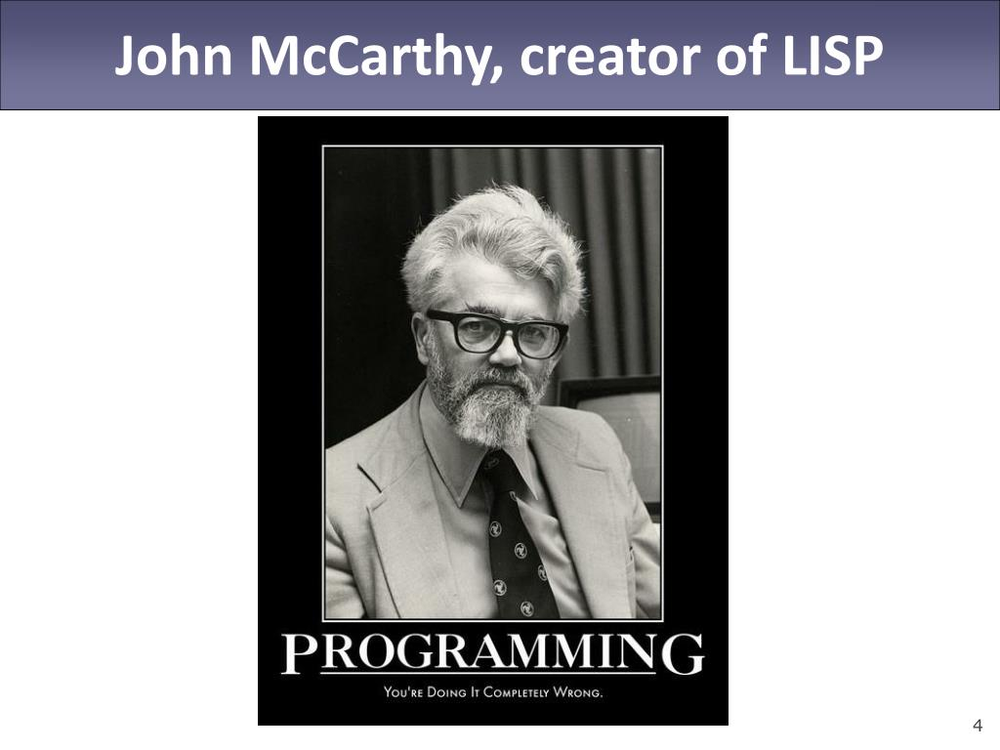
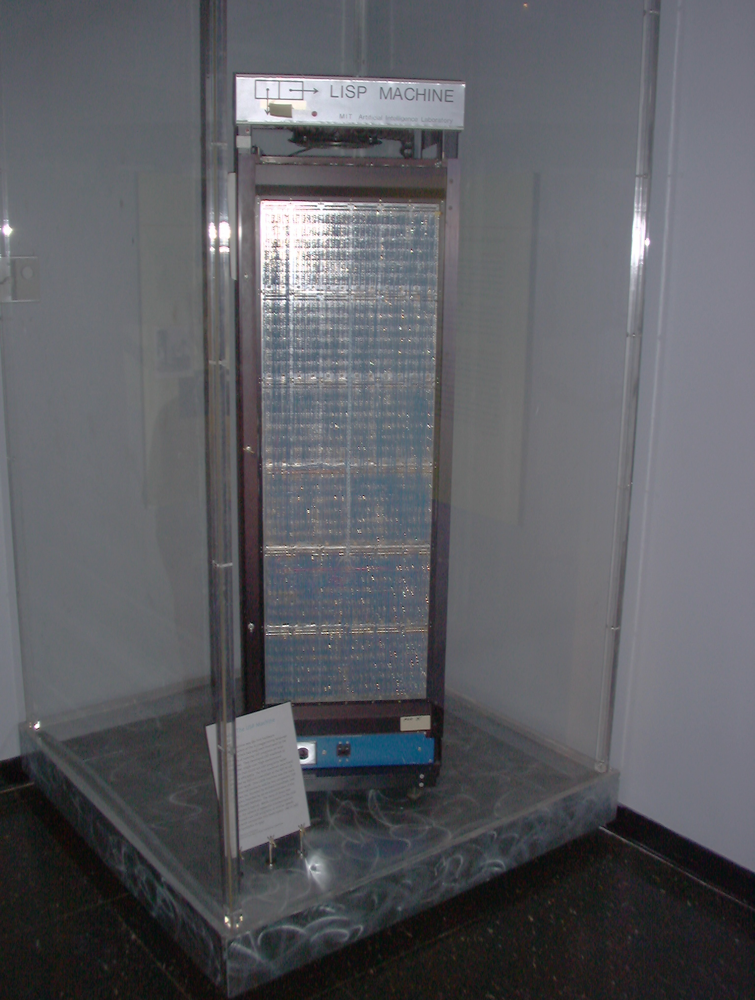
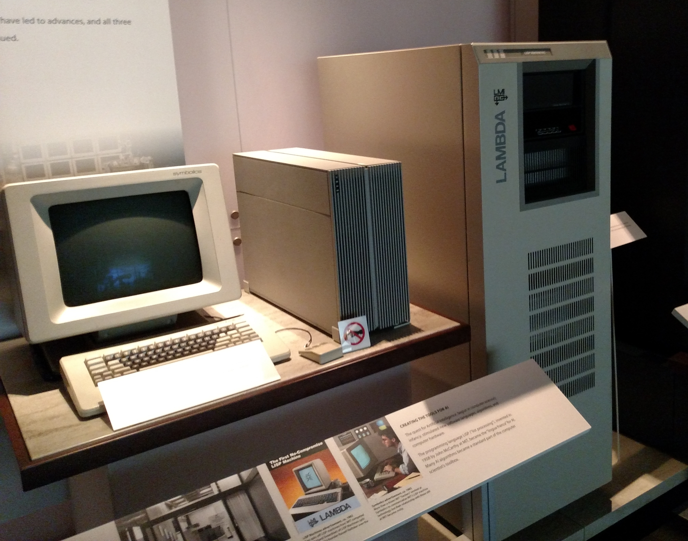
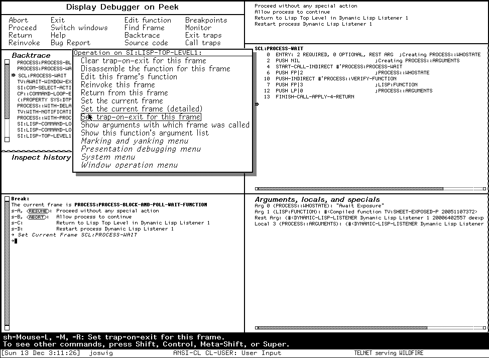
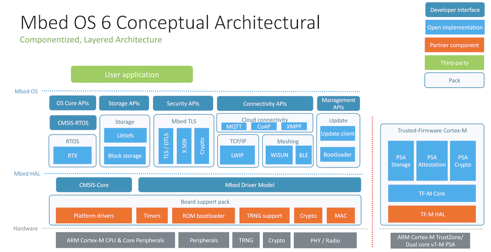
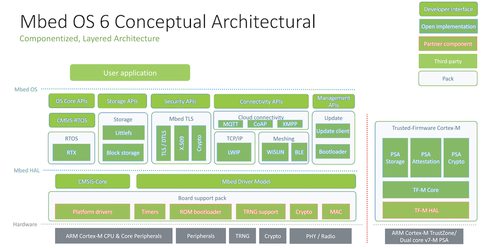
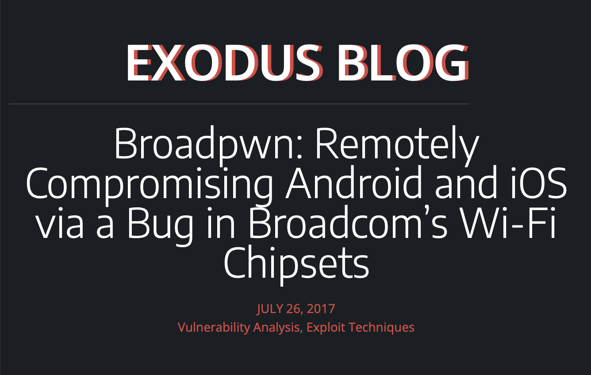
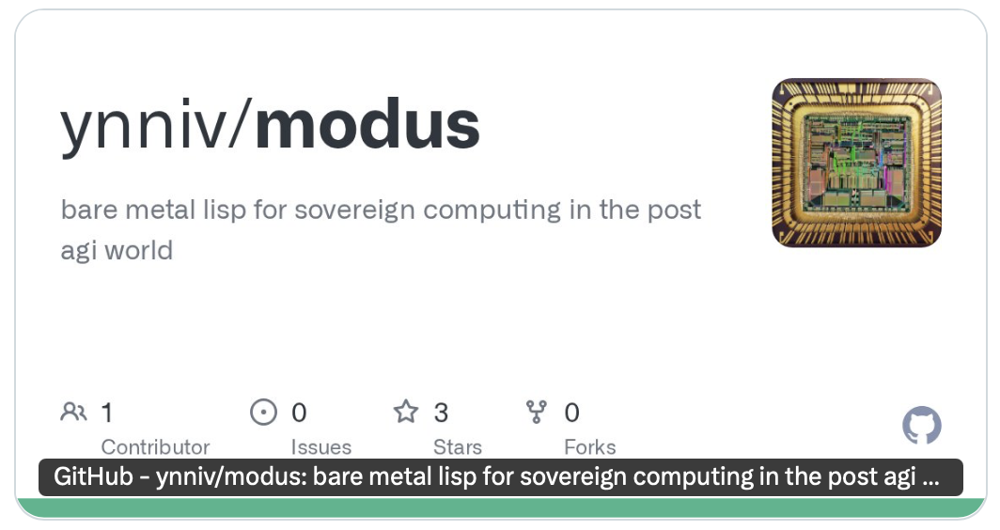
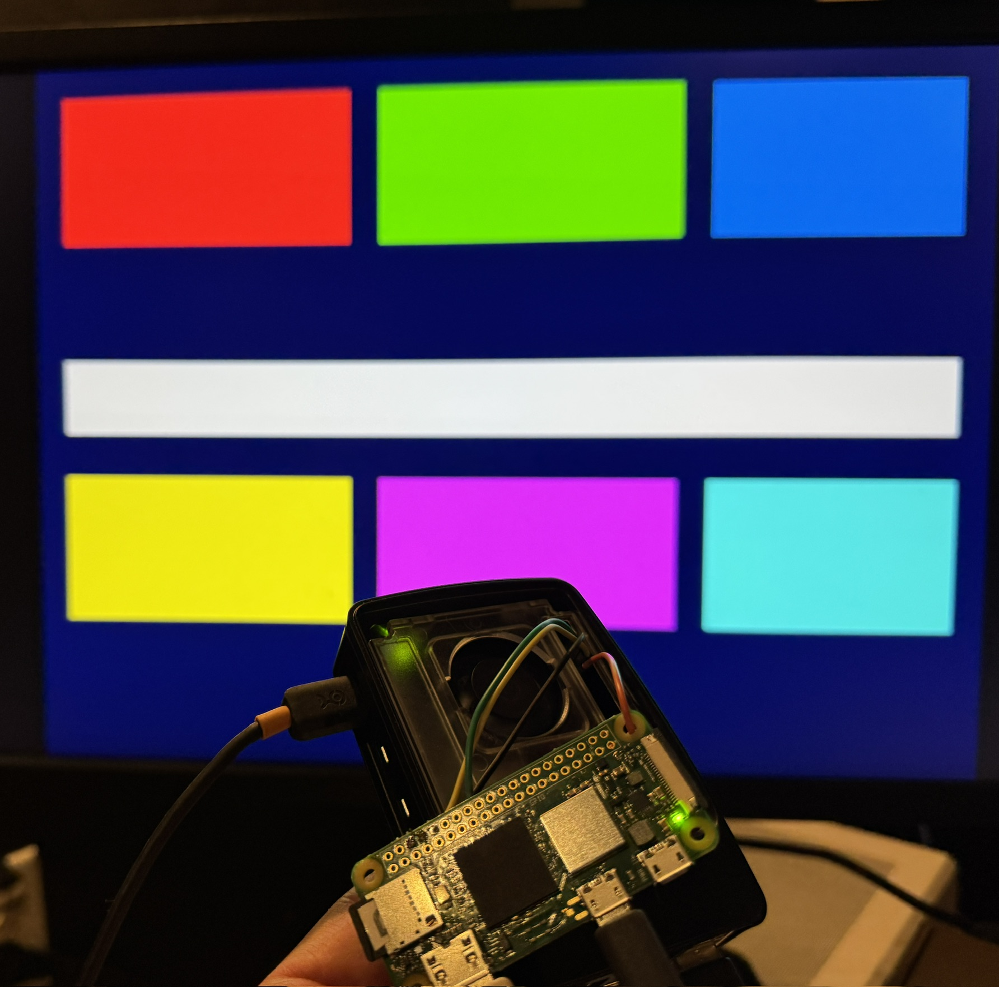

a new bare metal lisp
lisp is not new

people once made machines that were only lisp

nothing is more powerful than lisp

some of them looked like black and white versions of the tools we use today

what's notable about them is that they're inspectable down to the chips
modern stacks are complex — at best you can see into the app

when you have lisp on the metal, everything is visible

this isn't hypothetical. every binary blob is a hole below the water line

to be sovereign we need to be seaworthy

it boots two (emulated) platforms, but emits:
x86-64, i386, AArch64, RISC-V 64, PPC64, PPC32, ARMv5, ARMv7, Motorola 68k
claude did this in three weeks (pi zero 2 w)

also working on a universal boot image:
host lisp → x64 → aarch64 → riscv → x64